Introduction
Ce rapport accompagne le relevé d'audit effectué sur le site « Ville de Luxembourg ».
La méthodologie d'audit employée repose sur le référentiel RGAA 4, consultable à l'adresse suivante : https://accessibilite.public.lu/fr/rgaa4/criteres.html
L'audit a été réalisé au moyen de l'utilisation de navigateurs web et d'outils spécialisés. Des tests de restitution ont également été effectués conformément à la base de référence définie par le RGAA 4.
Échantillon
L'audit a porté sur un échantillon de 16 pages pour le niveau double A (AA) :
Environnement de test (base de référence)
Quelques critères RGAA, notamment ceux de la thématique JavaScript, incluent des tests de restitution à effectuer sur des technologies d'assistance associées à des navigateurs et des systèmes d'exploitation. Pour qu'un dispositif HTML / WAI-ARIA ou son alternative soit considéré comme compatible avec l'accessibilité, il faut qu'il soit pleinement fonctionnel, en termes de restitution et de fonctionnalités sur certaines combinaisons. Vous trouverez une explication détaillée de cet environnement de tests dans le document du RGAA 4.
Nous détaillons ci-dessous la base de référence utilisée pour réaliser les tests de restitution des composants du site.
Environnement de test – ordinateur
| Technologie d'assistance | Navigateur |
|---|---|
| NVDA 2022.2 | Firefox 106 |
| JAWS 2022 | Firefox 106 |
| VoiceOver (macOS Monterey version 12.5) | Safari 15.6 |
Environnement de test — mobile
| Système d'exploitation | Technologie d'assistance | Navigateur |
|---|---|---|
| Android 11 | TalkBack (dernière version) | Chrome 87 |
Accessibilité des pages auditées
Le site présente un niveau général d'accessibilité moyen.
Le niveau moyen de conformité relevé atteint 62.12% de conformité sur l’ensemble des pages auditées, avec 53.06 % de conformité au niveau simple A (A) et 88.24% de conformité au niveau double A (AA).
Le site est partiellement conforme.
Conformité RGAA 4 du site
| Conforme | Non conforme | |
|---|---|---|
| A | 53.06 % | 46.94 % |
| AA (légal) | 62.12 % | 37.88 % |
Note sur le calcul de conformité
La conformité globale (Tableau « Conformité RGAA 4 ») est calculée de la manière suivante : C / (C+NC). C est le nombre de critères conformes et NC le nombre de critères non conformes.
C'est ce nombre qui constitue la référence légale. Il représente le taux de conformité de l'échantillon.
Il est normal que le taux de conformité global diffère sensiblement du taux de conformité par page. En effet, un critère NC (non conforme) sur une page rend le critère non conforme sur l'ensemble de l'échantillon.
Pour qu'un site soit conforme (100 % des critères applicables sont conformes au niveau AA), il est nécessaire que le taux de conformité par page équivaille à 100 %.
Conformité pour chaque niveau
| Conforme | Non conforme | |
|---|---|---|
| A | 53.06 % | 46.94 % |
| AA | 88.24 % | 11.76 % |
Moyenne par pages
| Nº page | Titre de la page | %C |
|---|---|---|
| P01 | Accueil | 83.72% |
| P02 | Mentions légales | 95.00% |
| P03 | Contact | 95.45% |
| P04 | Plan du site | 100% |
| P05 | Résultats de recherche | 90.00% |
| P06 | Actualités | 89.47% |
| P07 | Page d'actualité | 88.89% |
| P08 | Newsletter | 84.62% |
| P09 | Semaines de sensibilisation | 87.18% |
| P10 | Actions environnementales | 88.89% |
| P11 | Agenda | 86.49% |
| P12 | Se déplacer en bus | 87.10% |
| P13 | Se déplacer en bus - Lignes | 88.24% |
| P14 | Se déplacer en bus - Ligne 2 | 89.19% |
| P15 | Parkings | 82.35% |
| P16 | Calendrier des collectes | 82.93% |
Moyenne par thématiques
| Thématiques | C | NC |
|---|---|---|
| Images | 100% | 0% |
| Cadres | 0% | 100% |
| Couleurs | 0% | 100% |
| Multimédia | 75% | 25% |
| Tableaux | 50% | 50% |
| Liens | 0% | 100% |
| Script | 67% | 33% |
| Éléments obligatoires | 57% | 43% |
| Structuration | 0% | 100% |
| Présentation | 75% | 25% |
| Formulaires | 55% | 45% |
| Navigation | 82% | 18% |
| Consultation | 100% | 0% |
Impacts utilisateurs
Les principales personnes impactées sont les personnes aveugles et celles qui naviguent au clavier. Les problèmes liés à la structuration des contenus (listes, titres, images) et aux scripts, à l’API ARIA et aux formulaires rendent parfois difficile l’utilisation du site par ces utilisateurs.
On note également que de nombreux contrastes ne sont pas suffisants malgré l'option de renforcement (les contrastes ont été testés en version contrastes renforcés).
Contenus dérogés
La dérogation est un moyen d'exclure du champ d'application du référentiel des contenus particuliers. Les cas de dérogations sont très encadrés, vous en trouverez le détail dans le guide des dérogations.
Les contenus suivants n'entrent pas dans le calcul de la conformité ni dans le périmètre des éléments à rendre accessibles, ils sont dérogés :
- Le service ReadSpeaker disponible dans toutes les pages intérieures (motif : service tiers non développé par l’entité).
- Les documents bureautiques en téléchargement publiés avant le 23 septembre 2018 (motif : contenus exemptés de l’obligation d’accessibilité).
- Les magazines PDF en téléchargement (motif : charge disproportionnée). Un travail de mise en conformité est engagé.
- Les contrastes de couleurs utilisés pour les logos des lignes de bus : ces couleurs répondent à une charte graphique plus globale utilisée sur le mobilier urbain et la communication générale de la Ville de Luxembourg. Néanmoins la Ville de Luxembourg réfléchit à un moyen pour rendre ces informations pleinement accessibles.
- Le formulaire de recherche d'itinéraire Mobiliteit (motif : service tiers non développé par l’entité). Les informations sont consultables en ligne.
- Le dépliant horaire en téléchargement (motif : charge disproportionnée). Les informations sont consultables sur les pages des différentes lignes.
- Le calendrier de collecte présenté par année utilise des éléments tooltip. La consultation des données par jour ou par mois fournit une alternative.
- Les images présentées sont considérées comme informatives par la ville de Luxembourg, par conséquent, elles disposent d'une alternative textuelle .
Droit à la compensation
Les dérogations émises notamment pour charge disproportionnée demandent en contrepartie la mise en place d'un moyen de compensation pour les utilisateurs. Pour les documents bureautiques par exemple, vous devez fournir un moyen à l'utilisateur de demander une version accessible d'un document s'il en a besoin. Cela peut être un mail ou un formulaire contact.
Note sur le relevé des non-conformités
Ne sont cités dans ce rapport que quelques exemples issus du relevé des non-conformités.
De plus, toutes les occurrences d'une non-conformité ne sont pas listées dans le relevé. Par exemple : pour les images, les contrastes de couleurs des textes et des composants d’interface, les liens non explicites, les balises utilisées à des fins de présentation, les titres manquants, le relevé mentionne quelques occurrences, mais ne les cite pas tous.
Avis
Les non-conformités les plus bloquantes pour les utilisateurs concernent :
- Certains liens n'ont pas d'intitulé explicite.
- La hiérarchie des titres (des titres sont absents des pages, ce qui est un frein à l’exploration des pages par les utilisateurs aveugles).
- La structuration des listes (de nombreux ensembles de liens ne sont pas structurés dans des listes, comme les grands ensembles de liens des lignes de bus).
- Des informations uniquement données par la couleur ou la forme ne sont pas restituées aux technologies d'assistance ce qui provoque une perte d'information.
- Des champs de formulaire n'ont pas d'étiquette ce qui les rend inaccessibles aux utilisateurs de lecteurs d’écran.
- Le parcours de la navigation au clavier n'est pas toujours cohérent.
- Certains scripts sont également problématiques.
Ce sont donc ces points qui devront nécessiter une attention toute particulière et qui demanderont le plus d'efforts.
Annexe technique
Cadres
L'absence d'identification des cadres peut poser un problème de repérage dans la structure de la page ou de compréhension des contenus pour les personnes aveugles.
Constats sur le site
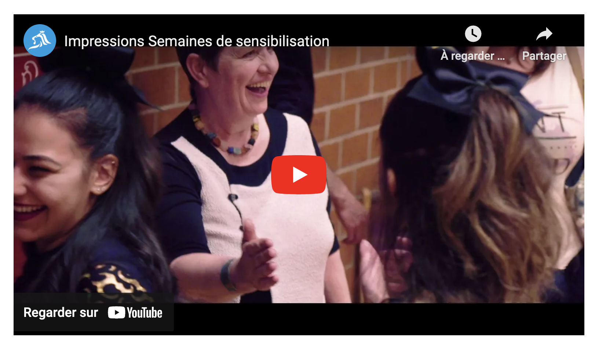Dans la page Semaines de sensibilisation, la vidéo de présentation est intégrée dans un cadre qui ne possède pas de titre.
Couleurs
Recommandation
Ne pas donner l'information uniquement par la couleur et utiliser des contrastes de couleurs suffisamment élevés pour les textes et les composants d'interface.
Contrastes des textes
Plusieurs couleurs présentent un rapport de contraste insuffisant, ce qui peut poser problème aux grands malvoyants et aux déficients visuels qui ont des difficultés à percevoir les couleurs ou les contrastes.
Rapports de contrastes définis par le RGAA
- Pour les textes qui ont une taille de police calculée inférieure à 24px sans effet de graisse ou une taille de police calculée inférieure à 18,5px avec effet de graisse, le rapport de contraste entre la couleur du texte (y compris le texte en image) et son arrière-plan doit être de 4.5:1, au moins.
- Pour les textes qui ont une taille de police calculée supérieure ou égale à 24px sans effet de graisse ou une taille de police calculée supérieure ou égale de 18,5px avec effet de graisse, le rapport de contraste entre la couleur du texte (y compris le texte en image) et son arrière-plan doit être de 3:1, au moins.
Vous pouvez foncer les couleurs pour obtenir le rapport de contraste exigé.
Si la charte graphique ne peut être modifiée, fournissez une méthode aux utilisateurs pour consulter le site avec des contrastes suffisants. Ceci peut être réalisé simplement avec une fonctionnalité JavaScript et une surcharge CSS des couleurs.
Vous pouvez voir un exemple de ce type de mécanisme sur le site sncf.com. Dans les réglages d'accessibilité, vous trouverez une option qui permet d'afficher le site avec des contrastes renforcés et inversés.
Constats sur le site
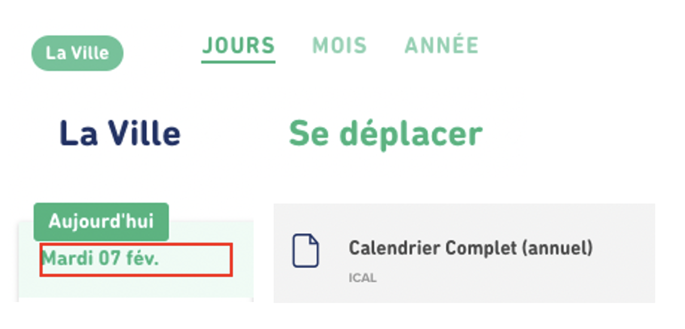Dans plusieurs pages du site, en version contrastes renforcés, on constate que des contrastes entre la couleur de texte et la couleur de fond ne sont pas suffisants, par exemple :
- Les boutons de menu vert (#34B47D) sur fond blanc lorsque la page est active avec un ratio de 2.63 ;
- En page "Résultats de recherche", le tag "Ville" ;
- En pages Actualités, le texte de la pagination ;
- Des textes gris sur fond gris, par exemple : dans le calendrier des collectes, le texte "ICAL" ;
- Dans la page Calendrier des collectes, l'encart "Aujourd'hui", la date du jour ou les samedis et dimanches.
On trouve également dans les pages Newsletter ou Agenda des textes superposés sur des images dont le rapport de contraste est insuffisant.
Contraste des composants d'interface
Les composants d'interface, les illustrations porteuses d'information ou encore les mises en couleurs porteuses d'information doivent être suffisamment contrastés pour être perçus par les utilisateurs ayant des troubles de perception des couleurs. Par exemple, une icône porteuse d'information devra avoir un rapport de contraste avec la couleur de fond de 3. De même, pour un champ de saisie de formulaire, dont la zone active est matérialisée par sa bordure, alors la couleur de cette bordure devra avoir un rapport de contraste de 3 avec la couleur de fond de la page.
Constats sur le site
En mode contrastes renforcés, certains composants sont difficilement perceptibles sur l’interface. Par exemple :
- Dans la page Se déplacer en bus, le déclencheur du tooltip ;
- Dans la page Actions environnementales de la source au robinet les couleurs du graphique "Pourcentage d'approvisionnement en sources d'eau en 2021".
Multimédia
Recommandation
Donner si nécessaire à chaque média temporel une transcription textuelle, des sous-titres synchronisés et une audiodescription synchronisée pertinents. Donner à chaque média non temporel une alternative textuelle pertinente. Rendre possible le contrôle de la consultation de chaque média temporel et non temporel au clavier et s'assurer de leur compatibilité avec les technologies d'assistance.
Identifier les vidéos
Il est nécessaire d'identifier la vidéo et permettre ainsi aux utilisateurs de comprendre quelle est l'information présentée dans ce contenu.
Vous disposez de deux méthodes pour le faire :
- soit faire précéder la vidéo par un titre (solution recommandée) ;
- soit faire suivre la vidéo d'une phrase de légende (paragraphe).
Transcription textuelle
Les vidéos présentes sur le site ne disposent pas de transcription textuelle. Il s'agit d'un impact majeur d'accessibilité. En effet, la transcription textuelle est utile pour différents types d'utilisateurs (aveugles, malvoyants, sourds, malentendants, handicapés moteurs, handicapés cognitifs).
Cette transcription doit être un fichier structuré (docx, HTML) qui reprend toutes les informations présentes (visuelles et sonores) dans la vidéo.
Cette transcription peut être située :
- soit sur la même page que la vidéo ;
- soit ailleurs sur le site. Dans ce cas, ajouter alors un lien vers la transcription sous la vidéo par exemple.
Sous-titres
Chaque vidéo doit disposer de sous-titres synchronisés pertinents, pour permettre aux utilisateurs sourds ou malentendants d'accéder au contenu oralisé de la vidéo.
L'utilisateur doit pouvoir activer ou désactiver les sous-titres depuis le lecteur vidéo. Si ce n'est pas possible, une solution consiste à fournir deux versions de la même vidéo : une version sans sous-titres et une version sous-titrée (On fera ensuite un lien réciproque de l'une vers l'autre).
Audiodescription
Chaque vidéo doit disposer d'une version audiodécrite, si nécessaire. En effet, des textes incrustés ou des actions d'intérêt dans une vidéo ne seront pas perçus par un utilisateur aveugle.
De plus, l'utilisateur doit pouvoir activer ou désactiver l'audiodescription depuis le lecteur vidéo.
Constats sur le site
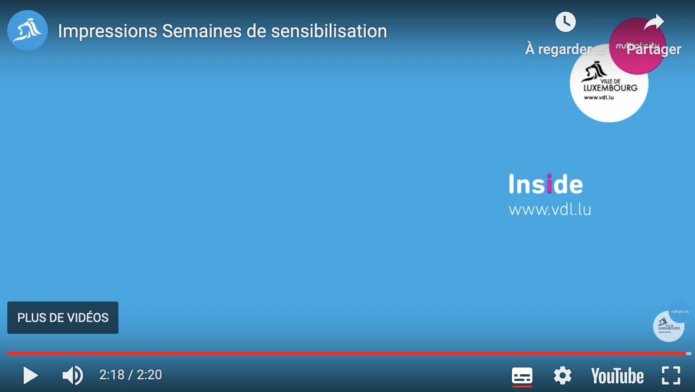Dans la page Semaines de sensibilisation, il n'y a pas de transcription textuelle adjacente à la vidéo.
Tableaux
Recommandation :
Donner un résumé à chaque tableau de données complexe, s'assurer que pour chaque tableau de données ayant un titre, ce titre est pertinent, identifier clairement les cellules d'en-tête, utiliser un mécanisme pertinent pour lier les cellules de données aux cellules d'en-tête. Pour chaque tableau de mise en forme, veiller à sa bonne linéarisation.
Tableau de données
Un tableau de données doit répondre à certains enjeux pour être exploité correctement par les lecteurs d'écran. Les enjeux sont les suivants :
- Le tableau doit posséder un titre permettant de l'identifier (
<caption>) ; - Les en-têtes doivent être identifiés (balises
<th>) et doivent pouvoir être restitués lorsque l'utilisateur parcourt chaque cellule à l'aide de son lecteur d'écran (attributsscopesi nécessaire).
Constats sur le site
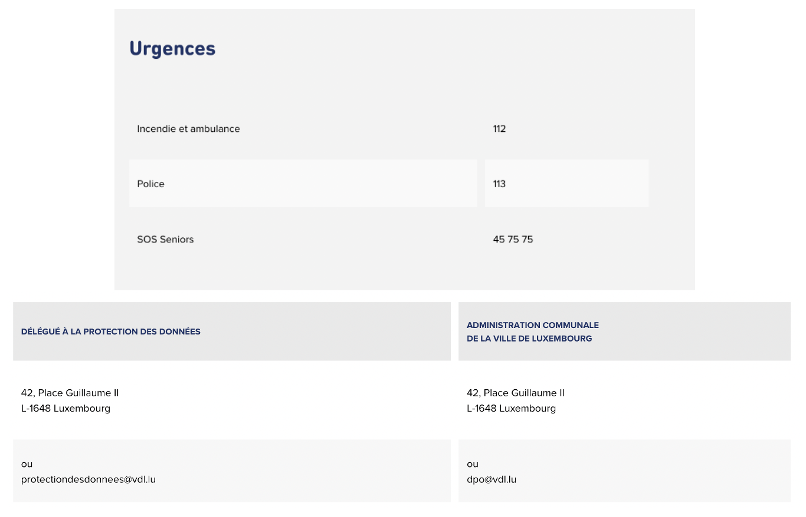Dans la page Contact, on trouve des tableaux de données sans titre relié. Pourtant, ils possèdent tous un titre visible. De plus, aucune des lignes n’a d’en-têtes déclarés. La première cellule de chaque ligne pourrait être considérée comme un en-tête.
On retrouve des tableaux similaires dans la page Newsletter avec des déclarations incorrectes d'en-tête de colonnes.
Liens
Recommandation :
Donner des intitulés de lien explicites, grâce à des informations de contexte notamment, utiliser le titre de lien le moins possible. S'assurer que le nom visible est contenu dans le nom accessible.
Pertinence des intitulés
Un lien possède généralement un intitulé et un contexte. L'intitulé est
le texte présent dans la balise <a> (ou la valeur de
l'attribut alt de l'image dans le cas d'un lien-image) et le
contexte du lien est représenté par le titre qui précède, le titre du
lien
(l'infobulle) ou tout simplement le texte dans lequel il est inséré.
Pour être considéré comme pertinent, l'intitulé d'un lien doit permettre de comprendre sa destination en prenant en compte son contexte.
Liens-images
Un lien-image est un lien dont le contenu n'est composé que d'une ou
plusieurs images (balises <img>). Généralement, ces
liens ne posent aucun problème aux utilisateurs voyants qui parviennent à
comprendre la destination du lien grâce à l'image et son contexte. En
revanche, pour une personne aveugle, ces liens doivent obligatoirement
posséder un intitulé.
L'intitulé d'un lien-image est généré grâce à l'alternative de l'image contenue dans ce lien.
Titres de liens (infobulles)
La restitution des titres de liens (attribut title sur une
balise) dépend fortement des lecteurs d'écran et des préférences
utilisateurs. Ainsi, l'utilisation de ces infobulles doit être limitée
aux
cas où l'infobulle apporte de l'information supplémentaire par rapport à
l'intitulé du lien. De plus, cette infobulle doit reprendre au moins
l'intitulé du lien pour être considéré comme conforme.
Constats sur le site
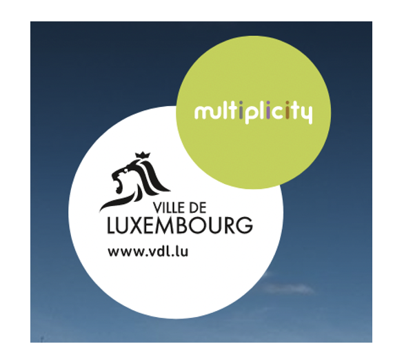On trouve dans le site des liens-images sans intitulé ou des liens-images dont l'intitulé n'est pas suffisamment explicite, par exemple :
On trouve dans la page d’accueil un lien-image constitué du logo de la ville sans intitulé. Pour ce lien, il faut renseigner l'alternative de l'image en reprenant le texte visible.

Dans plusieurs pages (ex : la page d’accueil, Mentions légales, Plan du site ou Actualités), il y a des liens-images dont le nom accessible,
constitué par l'attribut
alt ou la propriété aria-label selon les cas,
ne
reprend pas exactement l'intitulé visible du lien.
Ce sont les utilisateurs de commande vocale qui sont ici le
plus impactés. Les utilisateurs qui naviguent à la voix se reposent sur
l’intitulé visible pour déclencher les événements associés aux éléments.
Si cet intitulé visible est différent du nom utilisé par les technologies
d’assistance (le nom accessible), les utilisateurs de commande vocale
peuvent échouer à activer les éléments. Il faut que le nom accessible
contienne au moins l’intitulé visible (dans son intégralité).
C'est le cas, par exemple :
- De certains liens-images du bloc "Réseaux et partenariats" qui ont un
nom accessible différent du nom visible
(exemple :
alt="Verkéiersverbond"versus nom visible : "mobilitéits zentral"), en page d’accueil ; - De la pagination (page Actualités ou Agenda) pour laquelle le
titlede la page active ne reprend pas du tout l'intitulé du lien.
On retrouve une problématique similaire avec d'autres liens : en page d’accueil, le nom visible des liens du bloc "Info Trafic" n'est pas
repris dans le nom accessible, constitué par la propriété
aria-label="Voir cette perturbation"
Scripts
Recommandation :
Donner si nécessaire à chaque script une alternative pertinente. Rendre possible le contrôle de chaque code script au moins par le clavier et la souris et s'assurer de leur compatibilité avec les technologies d'assistance. Identifier les messages de statut lorsque c'est nécessaire.
Utilisation des boutons et des liens
Pour les aveugles et les grands malvoyants qui utilisent un lecteur d'écran, ce manque de distinction claire entre les liens et les boutons peut poser de graves problèmes.
Ainsi, un bouton implémenté sous la forme d'un lien qui déclenche une action de la page, risque de perturber l'utilisateur qui s'attendra au chargement d'une nouvelle page.
De manière générale, les liens devraient être réservés à l'affichage d'une nouvelle page ou la création de liens d'accès rapide dans le contenu. Dans tous les autres cas, l'emploi d'un bouton d'action est plus pertinent.
Enfin, chaque bouton doit avoir un nom accessible défini, soit par
l'intermédiaire d'un texte (visible ou positionné hors écran) ou d'une
propriété title, aria-label ou aria-labelledby.
Constats sur le site
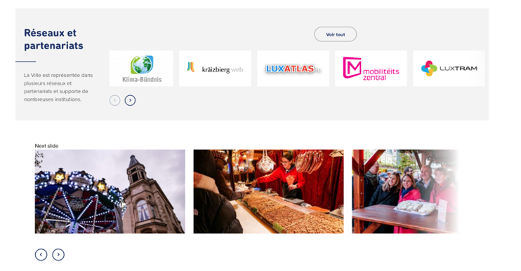Les éléments qui implémentent le motif ARIA button ne l'implémentent que de manière partielle. En effet, ils ne peuvent pas être activés avec la touche Espace comme par exemple les boutons des carrousels.
Utilisation inappropriée de propriétés ARIA
Les propriétés ARIA sont chargées de transmettre des informations indispensables à la restitution et l'utilisation des composants développés avec JavaScript aux technologies d'assistance. Une utilisation inappropriée peut poser des problèmes de restitution notamment.
Constats sur le site
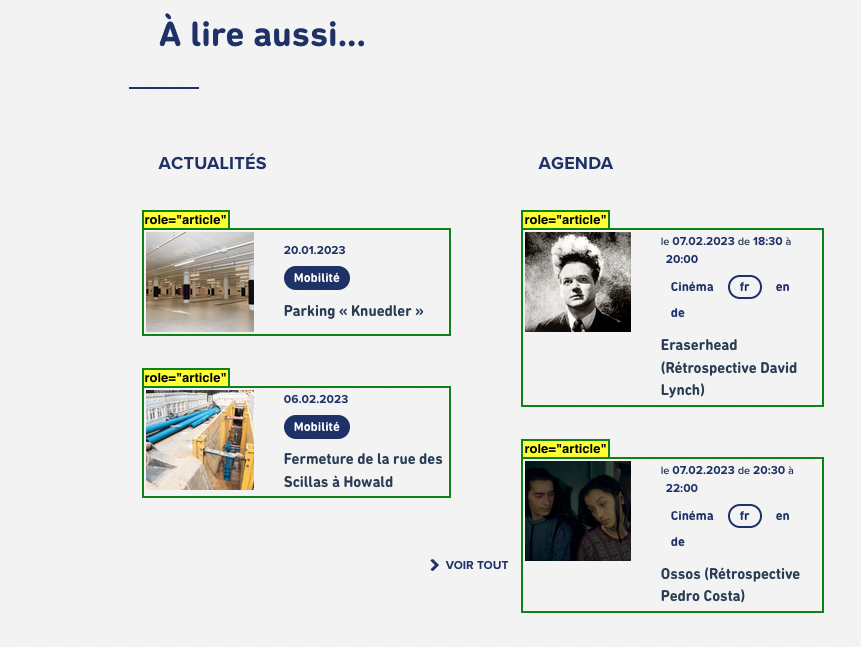Dans la page Mentions légales, des liens possèdent le role="article".
Il s’agit d’un problème majeur puisque la définition de ce rôle
« article », vient remplacer celui de « lien ». On
retrouve ce défaut sur de nombreux éléments dans de nombreuses pages du
site.
Dans la page Se déplacer en bus - Ligne 2, on relève également
l'utilisation inappropriée du role="article"
sur le déclencheur du tooltip.
Ainsi, lorsque les utilisateurs de lecteurs d’écran atteindront ces éléments, ils auront accès à une fausse information, la nature de l’élément sera "article" et non pas "lien". Savoir qu’il s’agit d’un lien permet de savoir que des actions sont possibles sur l’élément (activer le composant avec Entrée par exemple). Si cette information n’est pas disponible, un utilisateur aveugle n’activera pas l’élément et n’accédera donc pas au contenu associé.
Fenêtres modales
Constats sur le site
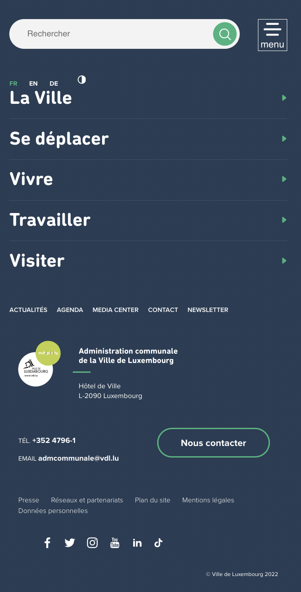Le menu de navigation en version mobile se présente comme une fenêtre modale, mais n’implémente pas le motif ARIA Dialog. De plus, on constate de nombreuses problématiques dans ce menu de navigation : la navigation au clavier n’est pas cohérente entre les éléments, les composants de retour ne sont pas atteignables au clavier, on tabule dans des éléments visuellement masqués.
Autocomplétion
Les champs de saisie qui proposent des listes de résultats au fil de la saisie ne sont pas toujours accessibles aux utilisateurs qui ne perçoivent pas l’écran ou ne le perçoivent pas dans sa totalité. En effet, ils n’ont pas l’information que des résultats sont apparus par exemple, ou encore que la recherche ne retourne aucun résultat.
Constats sur le site
Par exemple, le moteur de recherche, présent dans la modale possède un système d’autocomplétion qui n’est pas compatible avec les technologies d’assistance. En conséquence, un utilisateur aveugle par exemple n’a pas conscience de l’apparition de la liste des résultats ou de l’absence de résultats suite à sa saisie.
Carrousel
Constats sur le site
Les carrousels des pages d’accueil, Actualités, Winterlight 2022 ou Actions environnementales de la source au robinet ne respectent pas le motif de conception Carousel. Dans la page Actions environnementales de la source au robinet, par exemple, l'utilisateur peut tabuler dans les slides masquées.
Tooltip
Certaines pages contiennent des systèmes d'onglets qui n'implémentent pas ou mal le modèle de conception ARIA Tooltip.
Constats sur le site
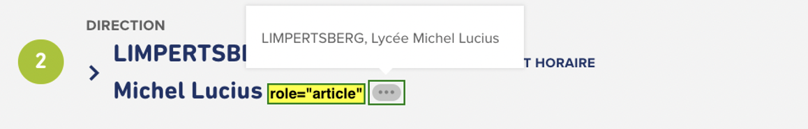Dans les pages Se déplacer en bus - Ligne 2 ou Calendrier des collectes, on trouve des éléments tooltip qui ne sont pas correctement implémentés ce qui les rend imperceptibles pour les utilisateurs de lecteurs d'écran.
Système d'onglet (tabs)
Certaines pages contiennent des systèmes d'onglets qui n'implémentent pas ou mal le modèle de conception ARIA Tabs.
Constats sur le site
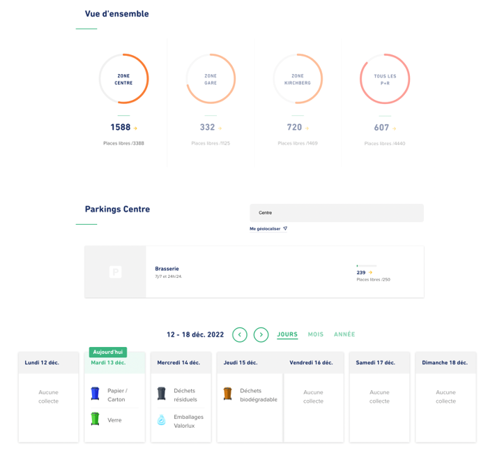Sur les pages Parkings P+R ou Calendrier des collectes, on trouve des systèmes d'onglets qui ne sont pas correctement implémentés (Sélection d'une zone pour les parkings ou sélection selon les jours, mois ou année dans le calendrier).
Éléments obligatoires
Recommandation
Vérifier que chaque page web a un code valide selon le type de document, un titre pertinent et une indication de langue par défaut. Vérifier que les balises ne sont pas utilisées uniquement à des fins de présentation, que les changements de langues et de direction de sens de lecture sont indiqués.
Titre de la page
Le titre de la page (visible dans l'onglet du navigateur) est un élément de repère dans le site web. Pour les utilisateurs de lecteur d'écran (utilisateurs aveugles ou grands malvoyants), c'est le premier élément restitué par le lecteur d'écran au chargement de la page. Cela permet de donner du contexte aux utilisateurs qui n'ont pas une vision globale de la page. Pour les utilisateurs avec des troubles de la mémoire, c'est l'information à laquelle ils accèdent lorsqu'ils naviguent avec l'historique de navigation du navigateur. Il est donc essentiel d'avoir des titres de pages pertinents, concis et très souvent uniques dans le site, et qui reflètent de la position de l'utilisateur dans le site web.
Il est des cas particuliers, comme les pages dont le contenu est une liste de résultats paginés (ex. : les résultats de recherche), pour lesquels le titre doit refléter la nature de la recherche ainsi que le numéro de page en cours de consultation.
Constats sur le site
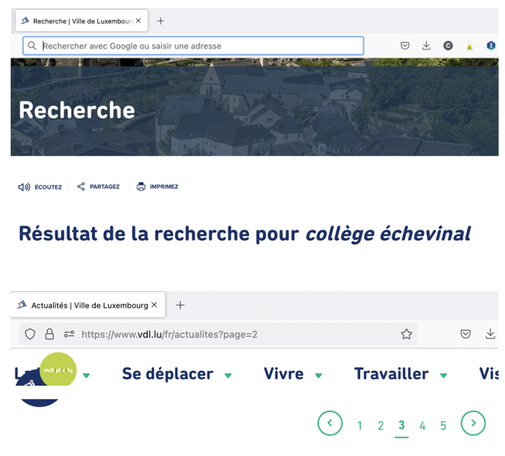Dans la page de recherche, le titre de la page ne reprend pas les termes recherchés. Il en est de même pour les pages présentant des filtres de recherche (Parkings P+R ou Calendrier des collectes par exemple).
Le titre de la page Actualités doit reprendre le filtre sélectionné dans la liste " Vous consultez les actualités " et la pagination. On retrouve la même problématique pour les pages Agenda .
Validité du code
Les technologies d'assistances, comme les lecteurs d'écran ou les systèmes de contrôle à la voix, s'appuient sur le code des pages pour générer les restitutions et les interactions avec l'utilisateur. Un lecteur d'écran va exploiter le code HTML fourni par le navigateur et les informations accessibles au moyen des API d'accessibilité du système.
Si le code comporte des erreurs (balises mal fermées par exemple), il y a un risque que les fonctionnalités du lecteur d'écran soient impactées, comme la navigation de lien en lien par exemple.
Pour vérifier la conformité d'une page, vous pouvez utiliser le validateur mis à disposition par le W3C.
Constats sur le site
Le code source est relativement robuste dans l’ensemble du site. On
constate quelques erreurs comme par exemple des valeurs d’identifiants
dupliquées : Exclusion_1, block-vdl-bottom-menu,
block-vdl-bottom-menu-menuetc.
On constate également quelques erreurs d'imbrication des balises avec
des p imbriqués dans des titres (pages Semaines
de sensibilisation, Actions environnementales de la source au robinet, Calendrier des collectes).
Structuration de l'information
Recommandation
Utiliser des titres, des listes, des abréviations et des citations pour structurer l'information. S'assurer que la structure du document est cohérente.
Titres
Le titrage des contenus est une étape importante dans la structuration des contenus. Cela répond à deux besoins :
- identifier rapidement un contenu recherché ;
- naviguer rapidement dans le contenu en se déplaçant de titre en titre.
Un titrage correct fournit à l'utilisateur de lecteur d'écran un plan du document et lui permet de naviguer de titre en titre pour se déplacer plus rapidement dans le contenu de la page.
Pour valider la structure de votre page, vous pouvez utiliser l'extension Firefox HeadingsMap. Lorsque l'extension est active, sélectionnez l'onglet « Headings » et vérifiez la cohérence et l'imbrication des titres.
Constats sur le site
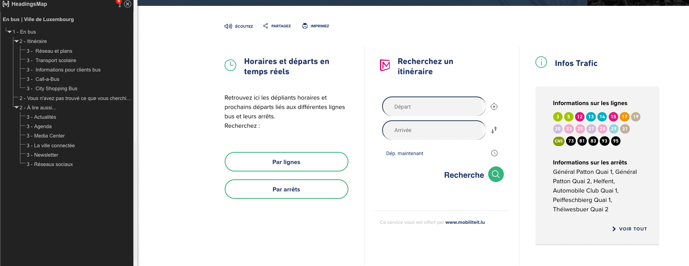En page Se déplacer en bus, on trouve des textes qui structurent du contenu et doivent donc être des titres, par exemple : "Horaires et départs en temps réels", "Recherchez un itinéraire", "Infos Trafic", "Informations sur les arrêts".
C'est également le cas dans d'autres pages comme par exemple, Se déplacer en bus - Lignes.
Listes
La structuration en listes permet aux utilisateurs de lecteurs d'écran de consulter plus rapidement le contenu, grâce à des raccourcis spécifiques, et d'accéder directement à une liste ou de la passer sans avoir à en parcourir tous les items.
Constats sur le site
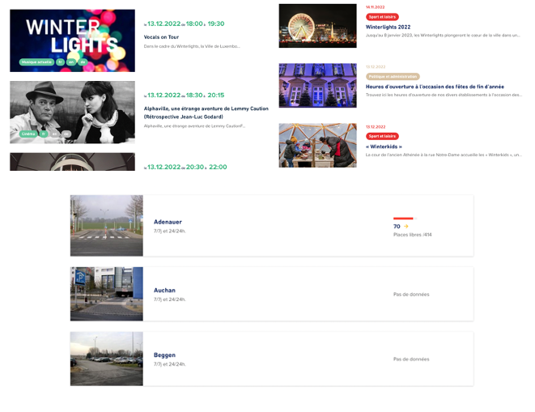Les items des blocs "Actualités", "Agenda" dans les pages intérieures mais aussi les items des pages Actualités, Agenda ou encore Parkings P+R sont des listes d’éléments, mais ne sont pas structurés avec les éléments appropriés.
Les résultats de la recherche (disponibles depuis la fenêtre modale de recherche) constituent également une liste et devraient être structurés comme tels. On retrouve la même problématique dans la page dédiée des résultats de recherche.
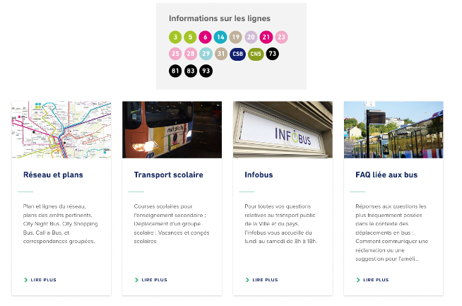Dans les pages "Se déplacer" on trouve des suites de liens ou d'éléments (les lignes par exemple) qui constituent des listes, mais ne sont pas structurées avec les éléments appropriés.
Structure du document
L'utilisation correcte des balises HTML5 et des landmarks ARIA va permettre d'enrichir la restitution pour les utilisateurs aveugles qui ne perçoivent pas les mises en forme : la navigation principale ne sera plus perçue simplement comme une liste de liens, elle sera restituée à l'utilisateur comme un élément de navigation, par l'intermédiaire du lecteur d'écran qui annoncera « région » ou « repère ».
De plus, ces marqueurs sémantiques vont également constituer des éléments de navigation rapide dans la page. Grâce à un raccourci clavier, certains utilisateurs vont pouvoir naviguer plus rapidement entre les régions qui auront été ainsi identifiées.
Constats sur le site
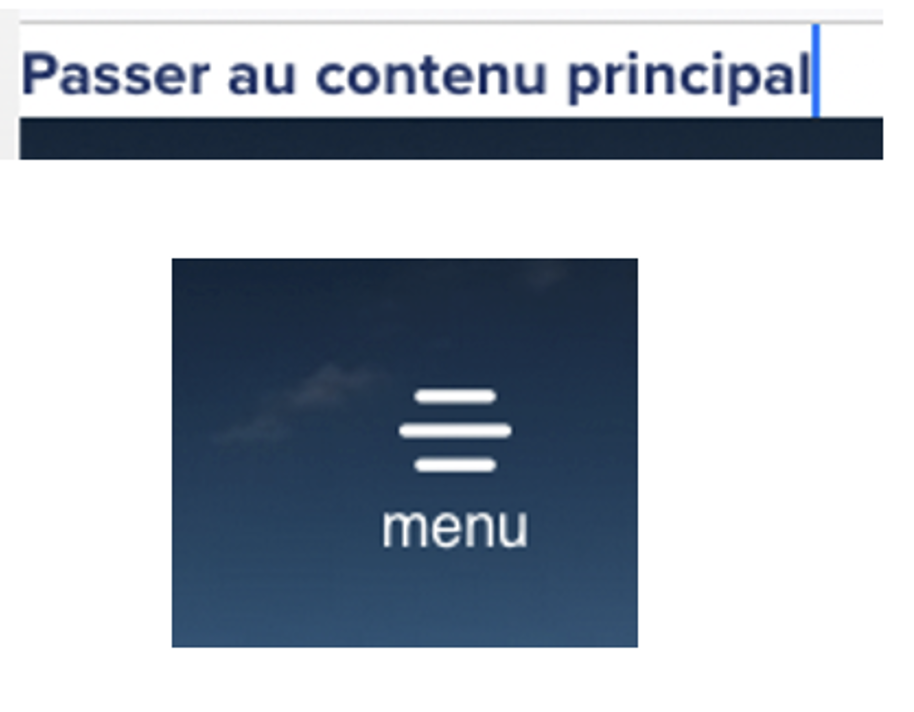On trouve sur le site plusieurs éléments considérés comme des éléments
de navigation et qui doivent être implémentés dans
un élément <nav role="navigation">, par exemple:
- Le lien d’accès rapide ;
- En version mobile, le bouton du menu burger ;
Présentation de l'information
Recommandation
Utiliser des feuilles de styles pour contrôler la présentation de l'information. Vérifier l'effet de l'agrandissement des tailles des caractères sur la lisibilité. S'assurer que les liens sont correctement identifiables, que la prise de focus est signalée, que l'interlignage est suffisant et donner la possibilité à l'utilisateur de contrôler la justification des textes. S'assurer que les textes cachés sont correctement restitués et que l'information n'est pas donnée uniquement par la forme ou la position d'un élément. S'assurer que les contenus sont lisibles et utilisables dans une fenêtre de largeur réduite. Veiller à ce que l'application de paramètres typographiques n'entraîne pas la perte de contenu ou de fonctionnalité. S'assurer que les contenus qui apparaissent au survol et à la prise de focus puissent être contrôlés par l'utilisateur.
Utilisation de CSS exclusivement
Certains utilisateurs qui présentent des troubles de la lecture (personnes dyslexiques par exemple), vont avoir besoin d'adapter la présentation des pages avec leurs propres mises en forme. Cela est possible sans difficulté si le site web utilise exclusivement les feuilles de styles CSS pour réaliser les mises en forme. Cependant, l'utilisation d'attributs et balises HTML de mise en forme rend ces adaptations plus compliquées, sinon impossibles.
Le RGAA donne la liste des attributs et balises qu'il est interdit d'utiliser.
Constats sur le site
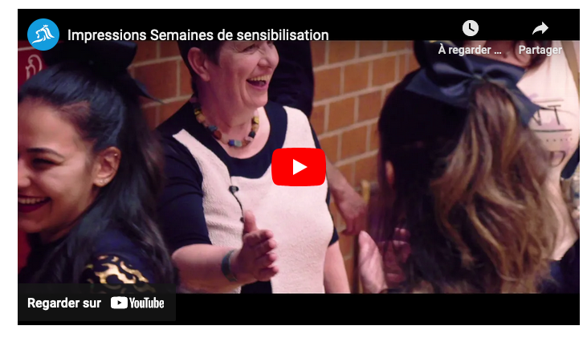On rencontre des attributs de mise en forme (width, height) sur le cadre qui embarque
la
vidéo dans la page Semaines
de sensibilisation.
Contenu compréhensible sans les styles : ordre visible vs ordre réel
Un utilisateur aveugle n'a pas accès à la mise en forme qui parfois est porteuse d'informations importantes, notamment des relations entre les éléments.
Il est important de ne pas implémenter les textes dans l'ordre visuel, mais bien dans l'ordre logique de dépendance et hiérarchie des éléments.
Le contenu doit rester compréhensible sans les feuilles de styles (vous pouvez tester vos contenus en désactivant les feuilles de styles).
Constats sur le site
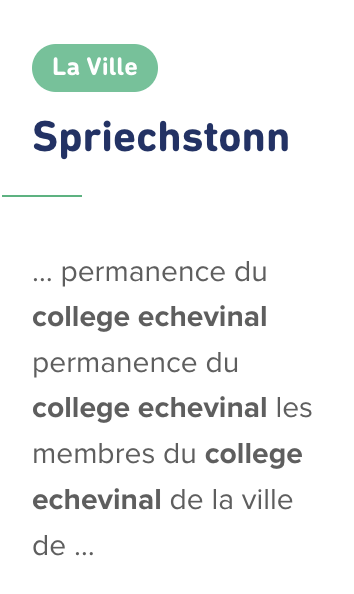Dans la page Résultats de recherche, l'ordre de lecture des éléments n'est pas toujours cohérent : la catégorie de chaque item est avant le titre auquel elle réfère dans le code source. (ex :" La ville" est située avant "Collège échevinal" dans le code source). Cet ordre illogique peut créer des confusions dans la compréhension des contenus pour les utilisateurs qui n’ont pas accès à la mise en forme.
Information donnée par la forme, la taille ou la position
Les utilisateurs qui ne perçoivent pas la mise en forme (utilisateurs aveugles par exemple) n'auront pas accès aux informations véhiculées par la mise en forme la taille (taille du texte pour signifier un degré d'importance par exemple), ou la position (une consigne indiquant de cliquer en haut à droite par exemple). Il est nécessaire de fournir un équivalent textuel qui permette d'offrir la même information aux utilisateurs aveugles.
Constats sur le site
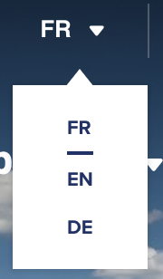Dans le sélecteur de langue, en version contrastes renforcés, l'indication de la langue active est signalée par un soulignement.
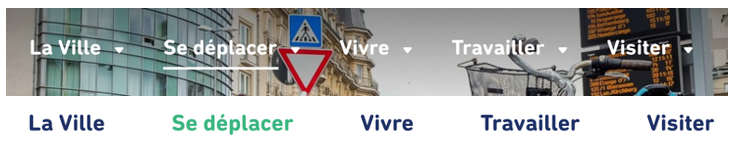Pour certaines pages, dans le menu, la page active est signalée par un soulignement ou par un changement de couleur selon la position dans la page.
Pour tous ces exemples, l'information doit être transmise aux technologies d'assistance via un attribut title ou un texte positionné hors écran par exemple.
Formulaires
Recommandation :
Associer pour chaque formulaire chacun de ses champs à son étiquette, grouper les champs dans des blocs d'informations de même nature, regrouper les items de même nature dans les listes de choix, donner à chaque bouton un intitulé explicite. Vérifier la présence d'aide à la saisie, s'assurer que le contrôle de saisie est accessible et que l'utilisateur peut contrôler les données à caractère financier, juridique ou personnel.
Étiquettes et champs
Les champs de formulaires doivent tous posséder des étiquettes correctement reliées.
Une étiquette de champ est un texte situé à proximité du champ de formulaire qui permet de connaître la nature, le type ou le format des informations attendues.
De cette manière, lorsqu'un utilisateur entre dans le champ de saisie avec un lecteur d'écran, le lecteur d'écran lit le contenu de l'étiquette. L'utilisateur comprend alors ce qu'il doit saisir.
Sans cela, même si une étiquette est présente visuellement, l'utilisateur entendra « champ de saisie vide » en entrant dans le champ et ne saura donc pas quoi saisir.
Constats sur le site
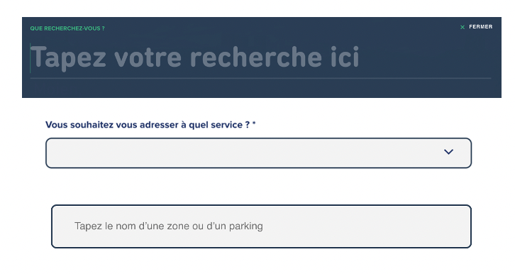On trouve dans les pages, plusieurs champs sans étiquette, par exemple :
- Dans la page Contact, le texte "Vous souhaitez vous adresser à quel service ?" n'est pas lié au champ ;
- Il en est de même pour certains champs présents dans les pages Newsletter et Parkings P+R.
Regroupements de champs et légendes
Les regroupements de champs sont utiles pour ne pas induire certains utilisateurs en erreur, notamment les personnes aveugles.
Les cas typiques de regroupements nécessaires sont les groupes de cases à cocher ou de boutons radio.
Il faut implémenter les champs dans un regroupement lorsque c'est nécessaire et il est obligatoire de définir une légende à ce regroupement.
Constats sur le site
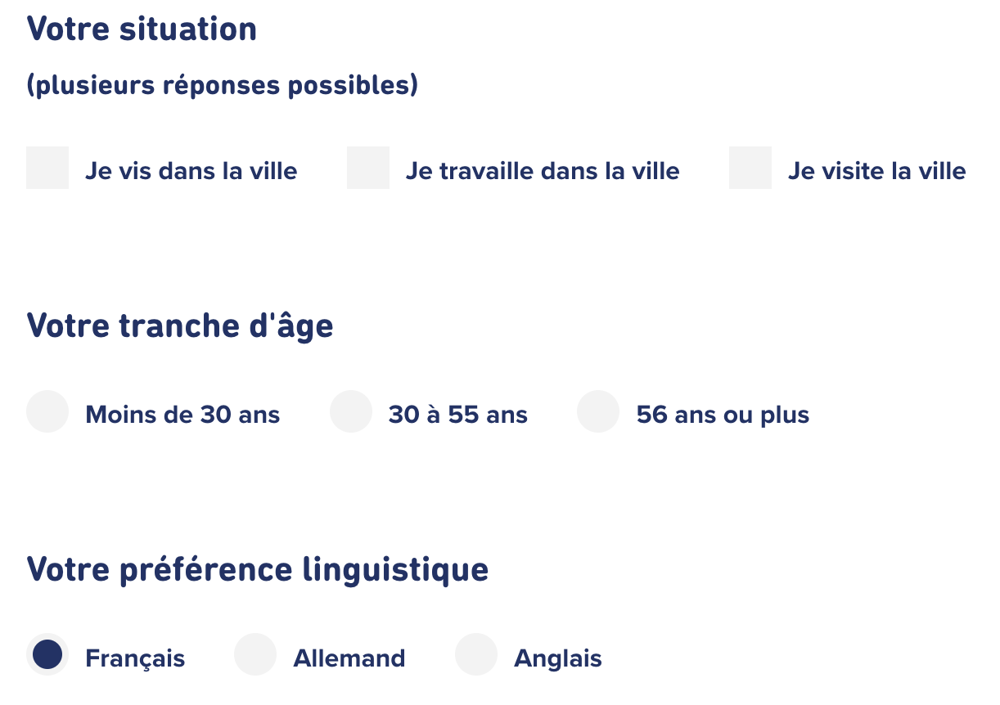Dans la page Newsletter, on trouve des champs de même nature qui
doivent être regroupés avec les éléments fieldset et legend
pour donner un titre aux regroupements.
Les champs "Votre tranche d'âge" doivent par exemple être regroupés.
Intitulés de bouton pertinents
Les boutons qui permettent d'interagir avec les formulaires doivent avoir des intitulés pertinents pour que l'utilisateur comprenne l'action du bouton.
Ces intitulés sont essentiels pour les personnes aveugles, afin qu'elles soient sûres de l'action qu'elles s'apprêtent à réaliser.
Constats sur le site
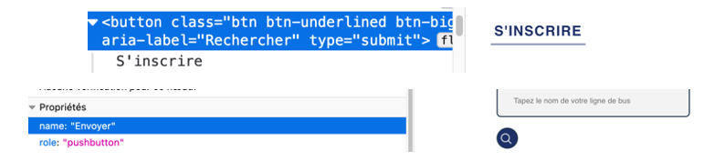Dans la page Newsletter, le bouton "S'inscrire" a un nom accessible
qui n'est pas pertinent : aria-label="Rechercher".
De même, dans la page Se déplacer en bus, le bouton de recherche de la ligne de bus a un intitulé non visible qui n'est pas pertinent : "Envoyer"
Contrôle de saisie et aide à la saisie
Tous les champs obligatoires doivent être identifiés préalablement à toute validation de l’utilisateur.
Pour les champs qui attendent un format de saisie particulier pour être validés, ce format doit être spécifié à l’utilisateur par un passage de texte visible à proximité du champ. De plus, si l’utilisateur commet une erreur sur ce champ, alors le message d’erreur doit présenter un exemple réel de saisie.
Enfin, les messages d'erreur de saisie des champs de formulaire doivent être liés correctement aux champs en erreur.
Constats sur le site
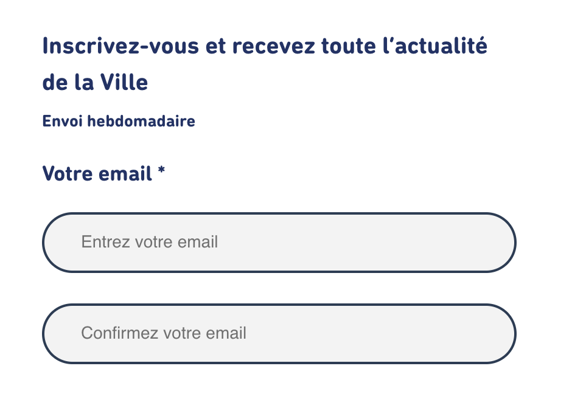Dans la page Newsletter, les champs obligatoires sont identifiés par un caractère « * », mais la signification de celui-ci n’est jamais définie dans le formulaire.
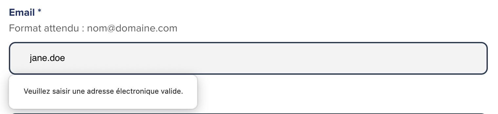Dans la page Contact, le message d’erreur du champ "email" ne fournit pas d’exemple réel de saisie. Il est possible de modifier le message d'erreur avec la constraint validation API.
Navigation
Recommandation :
Faciliter la navigation dans un ensemble de pages par au moins deux systèmes de navigation différents (menu de navigation, plan du site ou moteur de recherche), un fil d'Ariane et l'indication de la page active dans le menu de navigation. Identifier les groupes de liens importants et la zone de contenu et donner la possibilité de les éviter par des liens de navigation interne. S'assurer que l'ordre de tabulation est cohérent et que la page ne comporte pas de piège au clavier. S'assurer que les raccourcis clavier qui utilisent une seule touche sont contrôlables par l'utilisateur.
Liens d'accès rapide
On note l'absence d'un lien d'accès rapide au contenu au moins. Les liens d'accès rapides sont utiles aux utilisateurs qui naviguent au clavier, mais aussi aux utilisateurs malvoyants qui utilisent une loupe d'écran afin de sauter rapidement les éléments redondants, comme la navigation.
Pour cela, il est préférable que ces liens soient toujours visibles à l'écran. Malgré cela, ces liens peuvent être positionnés hors écran, mais doivent au moins être rendus visibles à la prise de focus.
Il est donc nécessaire d'implémenter au moins un lien d'accès rapide au contenu, qui permet de sauter toute la navigation principale.
Constats sur le site
Le lien d'accès rapide est présent mais n'est pas fonctionnel
puisqu'il ne pointe pas sur la balise main.
Ordre de tabulation
La navigation dans les contenus peut être considérablement compliquée pour les personnes aveugles ou les personnes handicapées motrices qui naviguent au clavier si l'ordre de tabulation n'est pas cohérent.
L'ordre de tabulation est déterminé par l'ordre des éléments dans le code HTML. Il ne suit pas forcément l'ordre de lecture de la page ou de l'écran, mais il doit être cohérent en fonction de la nature des contenus et des fonctionnalités.
Constats sur le site

L'ordre de tabulation dans les composants présente plusieurs incohérences :
- Le focus est repositionné en pied de page lorsque l'on active le mode contrastes renforcés ou que l'on ferme la fenêtre de recherche en naviguant au clavier ;
- Dans la fenêtre de recherche, on tabule sur un bouton visuellement masqué ;
- Lorsque les sous-menus du menu principal sont déployés, le focus est positionné sur la seconde liste de liens rendant imperceptible aux utilisateurs aveugles la première liste de liens "Accès rapide" ;
- En version mobile, après l'ouverture du menu, le focus est positionné sur le lien-image du header avant d'être positionné dans les éléments du menu ;
- Dans les pages intérieures présentant un sommaire (par exemple Mentions légales), le focus n'est pas positionné sur les zones de contenu, il reste dans le sommaire.